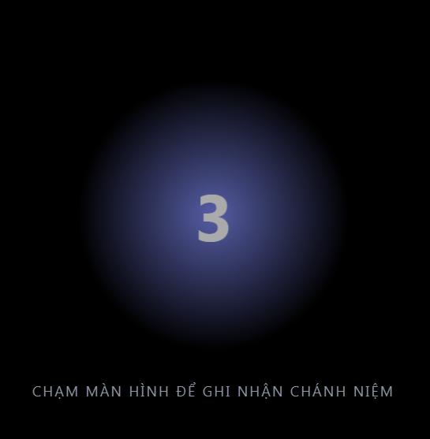

Nhật Ký Hành Giả là ứng dụng hỗ trợ tu tập và làm việc. Ứng dụng giúp hành giả theo dõi tiến trình trong công việc cũng như trong hành thiền, ghi nhận mức độ tỉnh giác thông qua số lần "Chánh Niệm", và trực quan hóa trạng thái tâm trí qua biểu đồ & đồ thị theo thời gian thực.
✨ Các Khái Niệm Cốt Lõi
Để sử dụng ứng dụng hiệu quả, bạn cần nắm rõ các chỉ số sau:
Chánh Niệm: Đơn vị đo lường sự tỉnh giác. Mỗi lần bạn nhận biết được hơi thở hoặc trạng thái tâm trí và chạm vào màn hình, một "Chánh Niệm" sẽ được ghi lại.
Chánh niệm tốt: Trạng thái khi tần suất ghi nhận (Niệm) duy trì ở mức ổn định và đều đặn.
Thất niệm: Trạng thái khi tâm trí bị xao nhãng hoặc buồn ngủ, dẫn đến việc không có hoặc có rất ít ghi nhận trong một khoảng thời gian.
Chuỗi Tinh Tấn: Số ngày liên tiếp bạn thực hiện tu tập.
✨ Tính Năng Nổi Bật
1. Quản Lý Mục Tiêu Đa Dạng
Hai loại mục tiêu chính:
ॐ Thiền Định: Theo dõi thời gian ngồi thiền và đếm số lần ghi nhận chánh niệm.
⚡ Công Việc: Đồng hồ đếm ngược truyền thống dùng cho công việc, học tập (Pomodoro) hoặc các thói quen khác.
Tùy biến: Tự đặt mục tiêu hàng ngày (số phút), thời gian cần dành để hoàn thành mục tiêu, màu sắc đại diện và danh mục quản lý.
2. Đồng Hồ & Ghi Nhận Tương Tác
Chế độ Thiền:
Chạm để đếm: Chạm vào màn hình (hoặc click chuột) mỗi khi bạn ghi nhận được sự chú tâm quay về hơi thở. Số đếm này được tích lũy thành điểm Chánh niệm (Thiện).

Chế độ Tập trung: Đồng hồ đếm ngược với thanh tiến trình trực quan.
Nhập liệu thủ công: Quên bấm giờ? Bạn có thể tự nhập lại phiên thiền hoặc sửa đổi các ghi chép cũ.
3. Báo Cáo & Phân Tích Số Liệu
Bảng nhật ký: Xem tiến độ ngày hôm nay so với mục tiêu đề ra.
Lịch tu tập: Biểu đồ dạng lưới hiển thị mức độ tu tập theo ngày. Màu càng đậm thể hiện thời gian tu tập càng nhiều.
Biểu đồ trực quan:
Biểu đồ phiên: Xem lại mức độ chánh niệm trong từng thời thiền (biểu đồ đường).
Báo cáo Tuần/Tháng: So sánh hiệu suất theo thời gian thực.
Phân bổ: Biểu đồ tròn xem tỷ lệ thời gian dành cho các mục tiêu khác nhau.
4. Phân Tích Thiền Tập (Mới)
Tab "Phân tích" giúp bạn soi chiếu lại chất lượng tâm trong các thời thiền với độ chính xác cao hơn.
Phân tích theo từng mục tiêu: Bạn có thể chọn xem số liệu của riêng "Thiền Tọa" hay "Thiền Hành" để so sánh sự tiến bộ của từng phương pháp tu tập.
Ngưỡng mất tập trung:
Đây là khái niệm quan trọng nhất để tính toán "Chất lượng thiền".
"Ngưỡng mất tập trung" là khoảng thời gian tối đa cho phép giữa hai lần ghi nhận; nếu vượt quá thời gian này, hệ thống sẽ xem là bạn đang mất tập trung.
Cơ chế hoạt động: Ví dụ bạn đặt ngưỡng là 12 giây.
Nếu bạn chạm màn hình sau 5 giây: Toàn bộ thời gian đó là Tỉnh thức.
Nếu bạn chạm sau 20 giây: Hệ thống hiểu rằng bạn đã lơ là hoặc hôn trầm mất 8 giây (20 - 12 = 8).
Tùy chỉnh riêng biệt: Mỗi loại thiền cần một nhịp độ khác nhau. Bạn có thể cài đặt ngưỡng thấp (ví dụ 5s) cho các bài tập ghi nhận nhanh, hoặc ngưỡng cao (30s) cho các bài tập định tâm sâu. Hệ thống sẽ tự động nhớ cài đặt này cho từng mục tiêu.
5. Riêng Tư & An Toàn Dữ Liệu
Offline Hoàn Toàn: 100% dữ liệu được lưu trữ trực tiếp trên trình duyệt và thiết bị của bạn. Không có dữ liệu nào được gửi về máy chủ.
Sao lưu & Khôi phục: Dễ dàng xuất dữ liệu ra file .json để cất giữ hoặc chuyển sang thiết bị khác.
🚀 Hướng Dẫn Sử Dụng
1. Tạo Mục Tiêu Mới
Nhấn nút "Mục tiêu mới" trên màn hình chính.
Chọn loại: Thiền Định hoặc Công Việc.
Điền tên, chọn màu sắc và đặt thời gian mục tiêu (ví dụ: 30 phút/ngày).
2. Bắt Đầu Một Phiên
Tại thẻ mục tiêu, nhấn nút Play (▶) (với Công việc) hoặc nút ॐ (với Thiền).
Trong lúc thiền: Chạm vào màn hình mỗi khi bạn thấy mình tỉnh thức quay về đối tượng thiền.
Kết thúc phiên, ứng dụng sẽ hiện bảng tổng kết để bạn ghi thêm nhật ký.
3. Xem Báo Cáo
Chọn tab "Tổng hợp" ở thanh bên để xem biểu đồ.
Chọn tab "Lịch" để xem lịch sử chi tiết.
✨ Hệ Thống Ghi Nhận
Mốc Liên Tục:
Danh hiệu
Điều kiện
Ý nghĩa
Cố Gắng
3 ngày
Bước đầu vượt qua sức ỳ.
Nỗ Lực
10 ngày
Bắt đầu hình thành thói quen.
Tinh Cần
30 ngày
Thói quen đã dần ổn định.
Nhiệt Tâm
60 ngày
Sự tu tập trở nên vững chãi.
Tinh Tấn Giác Chi
365 ngày
Sự kiên trì phi thường.
Mốc Chánh Niệm:
Mức độ
Số Chánh Niệm
Sơ Cơ
5,000
Thiền Sinh
10,000
Hành Giả
20,000
Thiền Giả
50,000
Gương Sáng
80,000
Mặt Hồ Tĩnh Lặng
100,000
Núi Đá
200,000
Thừa tự Pháp
500,000
⚠️ Lưu Ý Quan Trọng Về Dữ Liệu:
Dữ liệu được lưu trong Local Storage của trình duyệt.
Không xóa lịch sử/cache trình duyệt nếu chưa sao lưu, dữ liệu sẽ bị mất.
Cách Sao Lưu: Vào menu bên trái, chọn "Sao lưu" để tải file về máy.
Cách Khôi Phục: Chọn "Khôi phục" và tải lên file backup đã có.
Công nghệ: HTML5, CSS3, JS (ES6+). Thư viện:Chart.js, FontAwesome.
Link Tải & Mã Nguồn: tại đây. Chúc bạn an lạc và tinh tấn!